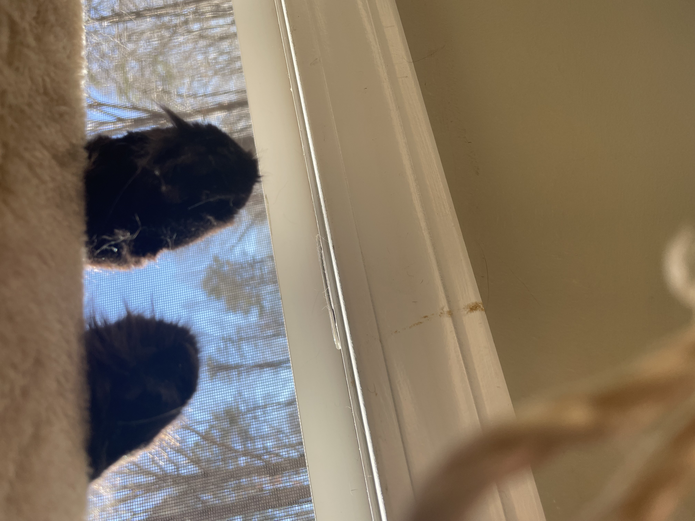
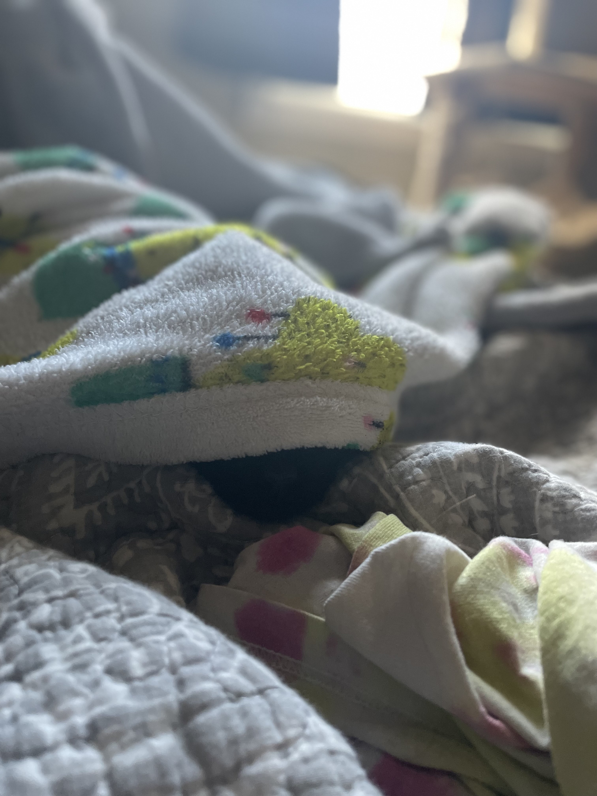

The story of how Neo came into my life.
Neo was found as a stray. He came to my door not looking so hot. He had a lot of superficial injuries to the head, chest and ears. As well as malnourished. However, he was extremely friendly (and vocal) just wanting some pets and some food.
The plan was to get him neutered, and for his body to heal and then to let him decide if he wanted back out or not.
He was not happy to be inside at all as he healed.
Once healed, he was allowed to go back outside. However, he always came back.
I would leave for work; so would he. I came home; so did he.
Eventually he acclimated to the life of an indoor only cat.